Home / Past papers / MLP End Term / this paper
Machine Learning Practice - Bs In Data Science/ Electronic Systems 13 Sep 26 - 13 Sep 2026
Elapsed 00:00
Consider the following pandas DataFrame representing employee training records:
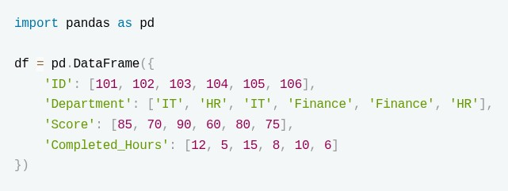
We want to retrieve all records of employees who belong to departments where the average training score is strictly greater than 75. Which of the following code snippets correctly achieves this?- df[df['Score'] > 75]
- df.groupby('Department').filter(lambda x: x['Score'].mean() > 75)
- df[df.groupby('Department')['Score'].transform('mean') >= 75]
- df.groupby('Department').apply(lambda x: x[x['Score'] > 75])
How many features remain in X_new after the transformation?
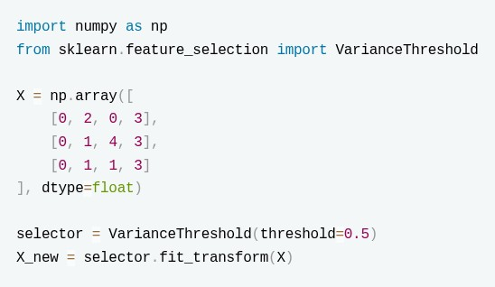
- 0
- 1
- 2
- 3
Determine the output of the following text preprocessing pipeline:

- ['red','blue','green','yellow']
- ['blue' 'red','yellow']
- ['blue' 'red']
- ['red','blue','green']
Four data points are given: A=(1,1), B=(2,2), C=(8,8), D=(10,10) A hierarchical agglomerative clustering algorithm using single linkage and Euclidean distance is applied. Initially, each point is considered as an individual cluster. Which two clusters will be merged in the first step?
- A and B
- C and D
- A and D
- B and C
A genre-based content recommender uses the 19 one-hot genre columns of each movie:
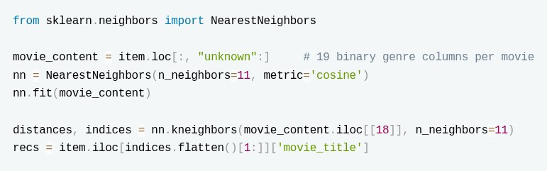
Which of the following statements is TRUE?- With
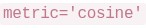
, the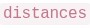
returned by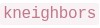
are cosine similarities lying in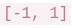
. 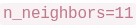
is used instead of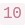
because the nearest neighbour of any movie is the movie itself, which is then dropped via `indices.flatten()[1:]- Because the genre vectors are binary, two movies that share no genre still receive a positive cosine similarity.
- Fitting
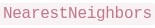
on the genre vectors additionally requires the user–item ratings matrix.
What is the output of the following preprocessing pipeline code? (Round off to 2 decimal places if applicable)

Suppose the orginal dataset has 10 rows (1 to 10) Which row/rows of the dataset will be printed if the following code is executed?
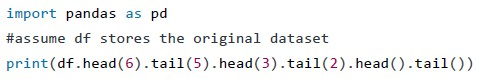
Enter the line number (1,2...,10) of the printed row. If multiple lines are printed enter the sum of the row numbers (i.e. if line 1 and 2 are printed enter 3)The pipeline first imputes the missing value with the (mean) strategy and then standardizes the column. What is the value of  (the transformed value of the first sample, whose original value is 2)? (Enter up to 2 decimals)
(the transformed value of the first sample, whose original value is 2)? (Enter up to 2 decimals)

(the transformed value of the first sample, whose original value is 2)? (Enter up to 2 decimals)
Consider a 3 class classification problem where the training dataset contains 10 features. The given model is trained on the dataset. What is the output of the code given below?
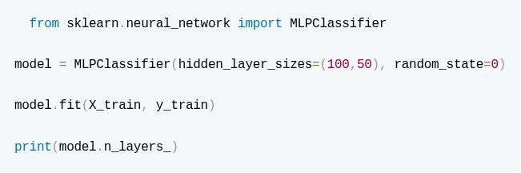
Assume both models in the code given below are fit on the same dataset (X_train) containing 10 features.
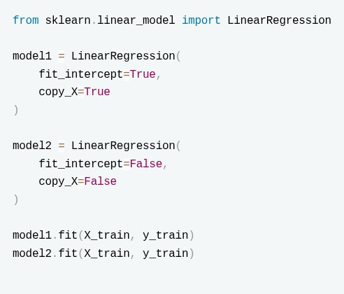
Enter the difference between the total number of learnable parameters in both the models. (Enter the absolute value of the difference)What is the output of the following code? (Round Upto one decmimal) X = [[0], [1], [2], [3]] y = [0, 0, 1, 1] from sklearn.neighbors import RadiusNeighborsRegressor neigh = RadiusNeighborsRegressor(radius=1.0) neigh.fit(X, y) print(neigh.predict([[1.5]]))
Consider the following feature matrix with one missing entry, imputed using
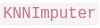
: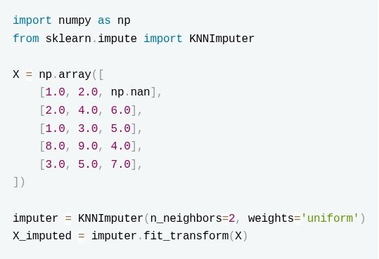
The nearest neighbours are decided using the nan-aware (weighted) Euclidean distance computed over the present coordinates. What is the imputed value at position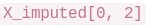
? (Enter up to 2 decimals)A binary classification model was evaluated on a test set with 500 samples. The model correctly identified 90 positive samples and 360 negative samples. Out of all the samples predicted as positive, 120 were predicted as positive. There were 100 actual positive samples in the dataset. Compute the F1-score of the model. (Round to 2 decimals)
Select the false statements:
- StandardScaler ensures the features correspond to a uniform distribution after scaling.
- MinMaxScaler ensures that feature values follow a Gaussian Distribution
- OridnalEncoder is best for data which contains values corresponding to a Normal Distribution.
- Pipeline helps us apply separate transformations to numerical and categorical columns directly.
Which of the following metrics have their lower bound as 0?
- Accuracy
- F1-Score
- R2-Score
- Mean_Squared_Error
- Precision
Regarding building pipelines with  and
and  , select all statements that are correct.
, select all statements that are correct.
and , select all statements that are correct.- Every intermediate step of a must be a transformer, i.e. it must implement both
 and
and  .
. - The final estimator of a only needs to implement .
- requires the user to supply an explicit name for each step, just like .
- A object exposes the interface (e.g.
 ) of its last step.
) of its last step.
Consider the following implementation of PCA:
 Which of the following are correct?
Which of the following are correct?
Which of the following are correct?- X_pca.shape[1] is equal to the original number of features.
- The sum of pca.explained_variance_ratio_ is at least 0.95.
- len(pca.explained_variance_ratio_) is equal to X_pca.shape[1].
- The principal components correspond to the original features with the highest variance.
Consider the following two ensemble regression architectures trained on the same dataset:
 How do these two models differ in their output strategy to produce the final prediction
How do these two models differ in their output strategy to produce the final prediction  for a given test instance, and how does adding more estimators affect them?
for a given test instance, and how does adding more estimators affect them?
How do these two models differ in their output strategy to produce the final prediction for a given test instance, and how does adding more estimators affect them?- ensemble1 computes a weighted sum of predictions where later trees have higher weights; ensemble2 takes a simple arithmetic mean of all trees.
- ensemble1 reduces variance by averaging independent predictions from 100 trees, meaning increasing n_estimators to 500 will ideally not cause overfitting.
- ensemble2 reduces bias sequentially, meaning increasing n_estimators to 500 carries no risk of overfitting.
- Both models output predictions by calculating the majority vote across the terminal leaf nodes of all individual base estimators.
Consider the following code snippet:
 Which of the following holds true?
Which of the following holds true?
Which of the following holds true?- The model performs no regularization.
- The model performs regularization and the regularization can also perfrom some feature selection.
- The model performs regularization and the regularization cant perfrom some feature selection.
- The model is very likely to be prone to overfitting
Consider the following assertion and reason. Select the correct option. Assertion (A): Increasing the number of estimators in AdaBoost can sometimes reduce the test accuracy, even though the training error continues to decrease. Reason (R): In AdaBoost, after each iteration, the weights of correctly classified training samples are increased so that future weak learners focus more on these correct samples. Choose the correct option:
- Both A and R are true, and R is the correct explanation of A.
- Both A and R are true, but R is not the correct explanation of A.
- A is true, but R is false.
- A is false, but R is true.
An email service develops a machine learning model to automatically identify phishing emails. Any email predicted as phishing is immediately moved to the user's spam folder without notification. A legitimate email incorrectly marked as phishing could cause users to miss important messages, while an actual phishing email that is not detected can still be reported manually by the user. The company wants to minimize the number of legitimate emails incorrectly classified as phishing. Which evaluation metric should be given the highest priority while selecting the model?
- Accuracy
- Precision
- Recall
- F1-score
Which data augumentation operation is being perfomed on the input image in the given code?
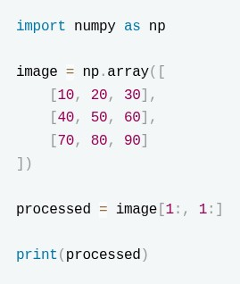
- Rotation
- Cropping
- Magnification
- Flipping
Consider the following code:
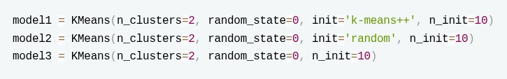
Assuming the all the models are trained on the same dataset, which of the models is likely to converge the slowest?- model1
- model2
- model3
- code sinppet for model3 is incorrect
A monthly airline-passenger series shows seasonal swings that grow larger as the overall level of the series rises over the years. It is decomposed as:
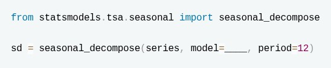
Which value should fill the blank, and for which reason?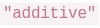
, because the trend is increasing over time.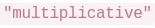
, because the seasonal amplitude scales with the level of the series.- , because
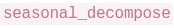
only supports additive seasonality. - , because the residual component must always sum to zero.
Identify the lines with errors in the given code snippet:
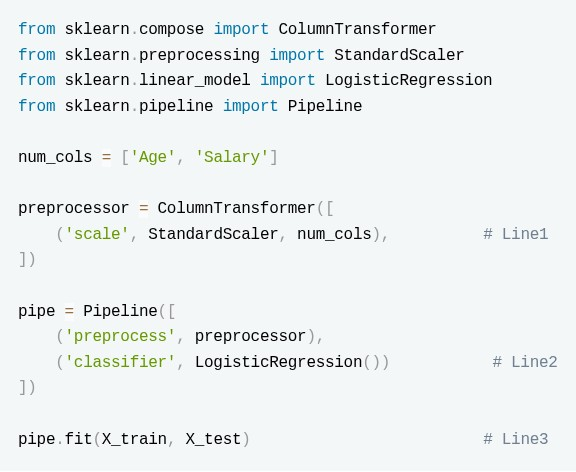
- There are no errors in the code
- Line1
- Line2
- Line3
Select the correct statements regarding the following code snippet:

- model2 is more likely to have a lower bias and higher variance compared to model1.
- Increasing the value of C allowed model2 to penalize misclassification errors more strongly.
- model1 must always perform better on the test set because it has lower training accuracy.
- The gamma parameter has no effect because the kernel is already set to 'rbf'.
A company uses K-Means clustering to divide its customers into 4 groups based on their purchasing behavior. After training the model, the data science team observes the following: Two different runs of K-Means on the same dataset produce different customer groups. One cluster contains customers that are much farther away from their assigned cluster center compared to other clusters. Which of the following statements are most likely to explain these observations?
- K-Means can converge to different solutions because the initial placement of cluster centroids can affect the final clusters.
- The cluster with customers far from its centroid may indicate that the chosen value of K does not represent the natural grouping structure of the data.
- K-Means guarantees finding the globally optimal clustering solution regardless of initialization.
- K-Means assigns clusters by maximizing the distance between points within the same cluster.
Identify which of the following lines (marked in comments) contain errors in the given code snippet:
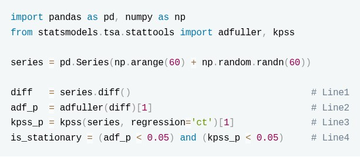
- Line1
- Line2
- Line3
- Line4
Consider the following user–item rating matrix (rows = users, columns = items; a means not rated):
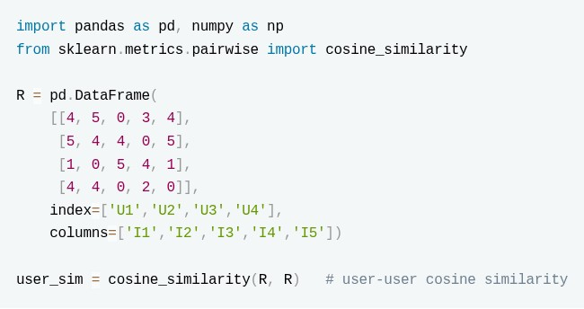
Using user–user collaborative filtering, the predicted rating is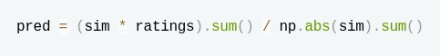
taken over the users who have rated the target item, where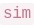
is the similarity of those users to the target user and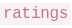
are their ratings of that item. Predict the rating that user U4 would give to item I5. (Answer up to 2 decimals.)A forecasting model achieves an R2 score of 0.98 on the test set. However, it was trained using a feature that contains the sales value of the next day. Which of the following is the most appropriate conclusion?
- The model has low bias.
- The model has successfully captured seasonality.
- The evaluation is unreliable due to data leakage.
- The model has underfit the data.
Answer key
- Q1 (MCQ, 4 marks): B
- Q2 (MCQ, 4 marks): B
- Q3 (MCQ, 4 marks): C
- Q4 (MCQ, 4 marks): A
- Q5 (MCQ, 4 marks): B
- Q6 (SA, 3 marks): 2.50
- Q7 (SA, 3 marks): 7
- Q8 (SA, 3 marks): -1.6 to -1.3
- Q9 (SA, 3 marks): 4
- Q10 (SA, 3 marks): 1
- Q11 (SA, 3 marks): 0.5
- Q12 (SA, 4 marks): 5.50
- Q13 (SA, 4 marks): 0.80 to 0.83
- Q14 (MSQ, 2 marks): A, B, C, D
- Q15 (MSQ, 2 marks): A, B, D, E
- Q16 (MSQ, 3 marks): A, B, D
- Q17 (MSQ, 3 marks): B, C
- Q18 (MCQ, 3 marks): B
- Q19 (MCQ, 3 marks): B
- Q20 (MCQ, 3 marks): C
- Q21 (MCQ, 3 marks): B
- Q22 (MCQ, 3 marks): B
- Q23 (MCQ, 3 marks): B
- Q24 (MCQ, 3 marks): B
- Q25 (MSQ, 4 marks): B, D
- Q26 (MSQ, 4 marks): A, B
- Q27 (MSQ, 4 marks): A, B
- Q28 (MSQ, 4 marks): B, D
- Q29 (SA, 5 marks): 3.80 to 3.90
- Q30 (MCQ, 2 marks): C